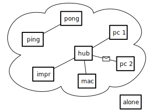

This document will show how we develop a simulator for a computer network, from scratch, and step by step. The program we are going to develop is a simple representation of a computer network: it consists of objects that represent different parts of a local network such as packets, nodes, workstations, routers and hubs.
At first, we will just simulate the different steps of packet delivery and have fun with the system. In a second step we will extend the basic functionalities by adding extensions such as a hub and different packet routing strategies. Doing so, we will revisit many object-oriented concepts such as polymorphism, encapsulation, hooks and templates. Finally this system could be refined to become an experiment platform to explore and understand distributed algorithms.
We need to establish the basic model; what does the description above tell us? A network is a number of interconnected nodes, which exchange data packets. We will therefore probably need to model the nodes, the connection links, and the packets:
Let's start exploring by sketching some simple tests; this requires defining a test class:
TestCase subclass: #KANetworkEntitiesTest
instanceVariableNames: ''
classVariableNames: ''
category: 'NetworkSimulator-Tests'
Since we will create several classes, we used the following notation to refer to the classes in which a method should be defined.
KANetworkEntitiesTest >> testPacketCreation means that the method testPacketCreation is defined in the class KANetworkEntitiesTest.
Packets are the simplest objects in our model: we need to create them, and ask them about the data they contain, but that's about it. Once created, a packet will not change its data, and the packet itself has no knowledge of the network, and no behavior that we can really talk about.
KANetworkEntitiesTest >> testPacketCreation
| src dest payload packet |
src := Object new.
dest := Object new.
payload := Object new.
packet := KANetworkPacket from: src to: dest payload: payload.
self assert: packet sourceAddress equals: src.
self assert: packet destinationAddress equals: dest.
self assert: packet payload equals: payload
In this unit test, we wrote how we think packets should be created, using a from:to:payload: constructor message, and how it should be accessed, using three messages sourceAddress, destinationAddress, and payload.
Since we have not yet decided what addresses and payloads should look like, we just pass arbitrary objects as parameters; all that matters is that when we ask the packet, it returns the correct object back.
Of course, if we now compile and run this test method, it will fail, because the class KANetworkPacket has not been created yet, nor any of the four above messages.
You can either execute and let the system prompt you when needed or we can define the class:
Object subclass: #KANetworkPacket
instanceVariableNames: 'sourceAddress destinationAddress payload'
classVariableNames: ''
category: 'NetworkSimulator-Core'The class-side constructor method creates an instance then sends it an initialization message:
KANetworkPacket class >> from: sourceAddress to: destinationAddress payload: anObject
^ self new
initializeSource: sourceAddress
destination: destinationAddress
payload: anObjectThe initialization method is only supposed to be called when creating packets.
KANetworkPacket >> initializeSource: source destination: destination payload: anObject
sourceAddress := source.
destinationAddress := destination.
payload := anObjectOnce a packet is created, all we need to do with it is to obtain its payload, or the addresses of its source or destination nodes. We thus define an accessor method for each instance variable.
KANetworkPacket >> sourceAddress
^ sourceAddressKANetworkPacket >> destinationAddress
^ destinationAddressKANetworkPacket >> payload
^ payloadNow our test should be running and passing. That's enough for our admittedly simplistic model of packets; we completely ignore the layers of the OSI model, but it could be an interesting exercise to model that more precisely.
The first obvious thing we can say about a network node is that if we want to be able to send packets to it, then it should have an address; let's translate that into a test:
KANetworkEntitiesTest >> testNodeCreation
| address node |
address := Object new.
node := KANetworkNode withAddress: address.
self assert: node address equals: address
Like before, before running this test, we have to define the KANetworkNode class:
Object subclass: #KANetworkNode
instanceVariableNames: 'address'
classVariableNames: ''
category: 'NetworkSimulator-Core'Then a class-side constructor method taking the address of the new node as parameter:
KANetworkNode class >> withAddress: aNetworkAddress
^ self new
initializeAddress: aNetworkAddress;
yourselfThe constructor relies on an instance-side initialization method:
KANetworkNode >> initializeAddress: aNetworkAddress
address := aNetworkAddressAnd we can ask a node for its address:
KANetworkNode >> address
^ addressAgain our simplistic tests should now pass.
After nodes and packets, we should look at links. In the real world, a network cable is usually bidirectional, but here we're going to keep it simple and define links as simple one-way connections. To make a two-way connection, we will just make two links, one in each direction.
Therefore, a link has a source and a destination node; additionally, to be able to send packets, nodes need to know about their outgoing links.
KANetworkEntitiesTest >> testNodeLinking
| node1 node2 link |
node1 := KANetworkNode withAddress: #address1.
node2 := KANetworkNode withAddress: #address2.
link := KANetworkLink from: node1 to: node2.
link attach.
self assert: (node1 hasLinkTo: node2)
This test creates two nodes and a link; after telling the link to attach itself, we check that it did so: the source node should confirm that it has an outgoing link to the destination node.
Note that the constructor could have registered the link with node1, but we opted for a separate message attach instead, because it's bad form to have a constructor change other objets; this way we can build links between arbitrary nodes and still have control of when the connection really becomes part of the network model.
Again, we need to define class of links:
Object subclass: #KANetworkLink
instanceVariableNames: 'source destination'
classVariableNames: ''
category: 'NetworkSimulator-Core'A constructor that passes the two required parameters to an instance-side initialization message:
KANetworkLink class >> from: sourceNode to: destinationNode
^ self new
initializeFrom: sourceNode to: destinationNodeThe initialization method itself:
KANetworkLink >> initializeFrom: sourceNode to: destinationNode
source := sourceNode.
destination := destinationNode.Accessors:
KANetworkLink >> source
^ sourceKANetworkLink >> destination
^ destination
The attach method of a link delegates to the source node (the link knows which node has to do something, and the node knows what to do precisely):
KANetworkLink >> attach
source attach: self
If each node knows about all its outgoing links, it means it has a collection of those; we therefore need to extend KANetworkNode, first with an additional instance variable outgoingLinks:
Object subclass: #KANetworkNode
instanceVariableNames: 'address outgoingLinks'
classVariableNames: ''
category: 'NetworkSimulator-Core'This variable needs to be initialized properly:
KANetworkNode >> initialize
outgoingLinks := Set new.
We can then implement the attach: method:
KANetworkNode >> attach: anOutgoingLink
outgoingLinks add: anOutgoingLink
And finally the testing method on instances of KANetworkNode:
KANetworkNode >> hasLinkTo: aNetworkNode
^ outgoingLinks
anySatisfy: [ :any | any destination == aNetworkNode ]Again, all the tests should now pass.
The next big feature is that nodes should be able to send and receive packets, and links to transmit them.
KANetworkEntitiesTest >> testSendAndTransmit
| srcNode destNode link packet |
srcNode := KANetworkNode withAddress: #src.
destNode := KANetworkNode withAddress: #dest.
link := (KANetworkLink from: srcNode to: destNode) attach; yourself.
packet := KANetworkPacket from: #address to: #dest payload: #payload.
srcNode send: packet via: link.
self assert: (link isTransmitting: packet).
self deny: (destNode hasReceived: packet).
link transmit: packet.
self deny: (link isTransmitting: packet).
self assert: (destNode hasReceived: packet)We create and setup two nodes, a link between them, and a packet. Now, to control which packets get delivered in which order, we specify that it happens in separate, controlled steps. This will allow us to model packet delivery precisely, to simulate latency, out-of-order reception, etc.:
send:via:. At that point the packet should be passed to the link for transmission, but not completely delivered yet.transmit:, and thus the packet should be received by the destination node.To send a packet, the node emits it on the link:
KANetworkNode >> send: aPacket via: aLink
aLink emit: aPacket
Since the packet will not be delivered right away, emitting a packet really just stores it in the link, until the user elects this packet to proceed using the transmit: message.
Storing packets requires adding an instance variable to KANetworkLink, as well as specifying how this instance variable should be initialized.
Object subclass: #KANetworkLink
instanceVariableNames: 'source destination packetsToTransmit'
classVariableNames: ''
category: 'NetworkSimulator-Core'KANetworkLink >> initialize
packetsToTransmit := OrderedCollection newKANetworkLink >> emit: aPacket
"Packets are not transmitted right away, but stored.
Transmission is explicitly triggered later, by sending #transmit:."
packetsToTransmit add: aPacketWe also add a testing method to check whether a given packet is currently being transmitted by a link:
KANetworkLink >> isTransmitting: aPacket
^ packetsToTransmit includes: aPacketTransmitting a packet means passing it to the destination node, which will receive it. A link can not transmit packets that have not been sent via it, and once transmitted, the packet leaves the link:
KANetworkLink >> transmit: aPacket
"Transmit aPacket to the destination node of the receiver link."
(self isTransmitting: aPacket)
ifTrue: [
packetsToTransmit remove: aPacket.
destination receive: aPacket from: self ]
Nodes only consume packets addressed to them; this is what will happen in our test, so we can worry about the alternative case later (notYetImplemented is a special message that we can use in place of code that we will have to write eventually, but prefer to ignore for the time being).
KANetworkNode >> receive: aPacket from: aLink
aPacket destinationAddress = address
ifTrue: [ self consume: aPacket ]
ifFalse: [ self notYetImplemented ]Consuming a packet represents what the node will do with it; for general simulations, we only need to remember which packets did arrive:
Object subclass: #KANetworkNode
instanceVariableNames: 'address outgoingLinks arrivedPackets'
classVariableNames: ''
category: 'NetworkSimulator-Core'KANetworkNode >> initialize
outgoingLinks := Set new.
arrivedPackets := OrderedCollection new
We define a simple consume: method: it simply adds the packet to a list of arrived packets.
KANetworkNode >> consume: aPacket
arrivedPackets add: aPacketKANetworkNode >> hasReceived: aPacket
^ arrivedPackets includes: aPacket
At that point all our tests should pass.
Note that the message notYetImplemented is not called, since our tests do not require routing.
If a node wants to send a packet to itself, it does not need any connection to do so. In real-world networking stacks, loopback routing shortcuts the lower networking layers; however, this is finer detail than we are modeling here. Still, we want to model the fact that the loopback link is a little special, so each node will store its own loopback link, separately from the outgoing links.
KANetworkEntitiesTest >> testLoopback
| node packet |
node := KANetworkNode withAddress: #address.
packet := KANetworkPacket from: #address to: #address payload: #payload.
node send: packet.
node loopback transmit: packet.
self assert: (node hasReceived: packet).
self deny: (node loopback isTransmitting: packet)
The loopback link is implicitely created as part of the node itself.
We also introduce a new send: message, which takes the responsibility of selecting the link to emit the packet.
For triggering packet transmission, we have to use a specific accessor to find the loopback link of the node.
First, we have to add yet another instance variable in nodes:
Object subclass: #KANetworkNode
instanceVariableNames: 'address outgoingLinks loopback arrivedPackets'
classVariableNames: ''
category: 'NetworkSimulator-Core'
As with all instance variables, we have to remember to make sure it is correctly initialized; we thus modify initialize:
KANetworkNode >> initialize
loopback := KANetworkLink from: self to: self.
outgoingLinks := Set new.
arrivedPackets := OrderedCollection newThe accessor has nothing special:
KANetworkNode >> loopback
^ loopback
And finally we can focus on the send: method and automatic link selection.
This method has to rely on some routing algorithm to identify which links will transmit the packet closer to its destination.
Since some routing algorithms select more than one link, we will implement routing as an iteration method, which evaluates the given block for each selected link.
KANetworkNode >> send: aPacket
"Send aPacket, leaving the responsibility of routing to the node."
self
linksTowards: aPacket destinationAddress
do: [ :link | self send: aPacket via: link ]One of the simplest routing algorithm is flooding: just send the packet via every link; this is obviously a waste of bandwidth, but it works. We can however make a special case for loopback, when the destination address is the one of the current node. When the address of a packet is the address
KANetworkNode >> linksTowards: anAddress do: aBlock
"Simple flood algorithm: route via all outgoing links.
However, just loopback if the receiver node is the routing destination."
anAddress = address
ifTrue: [ aBlock value: self loopback ]
ifFalse: [ outgoingLinks do: aBlock ]Now we have the basic model working, and we can try more realistic examples.
More realistic tests will require non-trivial networks.
We thus need an object that represents the network as a whole, to avoid keeping many nodes and links in individual variables.
We will introduce a new class KANetwork, whose responsibility is to help us build, assemble then find the nodes and links involved in a network.
Let's start by creating another test class, to keep things in order:
TestCase subclass: #KANetworkTest
instanceVariableNames: 'net hub alone'
classVariableNames: ''
category: 'NetworkSimulator-Tests'
Since every test needs to rebuild the whole network from scratch, we specify so in the setUp method:
KANetworkTest >> setUp
self buildNetworkBefore anything else, let's write a tests that will pass once we've made progress; we want to access network nodes given only their addresses. Here we check that we get a hub node based on its address:
KANetworkTest >> testNetworkFindsNodesByAddress
self
assert: (net nodeAt: hub address ifNone: [ self fail ])
equals: hub
We will have to implement this nodeAt:ifNone: on our KANetwork class; but first we need to decide how its instances are built.
Let's build network net, with the main part connected in a star shape around a hub node; a pair of nodes ping and pong are part of the network but not connected to hub, and the alone node is just by itself, not even added to the network:

KANetworkTest >> buildNetwork
alone := KANetworkNode withAddress: #alone.
net := KANetwork new.
hub := KANetworkNode withAddress: #hub.
#(mac pc1 pc2 prn) do: [ :addr |
| node |
node := KANetworkNode withAddress: addr.
net connect: node to: hub ].
net
connect: (KANetworkNode withAddress: #ping)
to: (KANetworkNode withAddress: #pong)
This method builds nodes as before, but sends connect:to: to the net object instead of creating links explicitly; this is how we tell the network which nodes and links it should remember.
Object subclass: #KANetwork
instanceVariableNames: 'nodes links'
classVariableNames: ''
category: 'NetworkSimulator-Core'Let's not forget about proper initialization:
KANetwork >> initialize
nodes := Set new.
links := Set newConnecting nodes means creating the links in both directions, then adding both nodes and both links in their corresponding collections:
KANetwork >> connect: aNode to: anotherNode
self add: aNode.
self add: anotherNode.
links add: (self makeLinkFrom: aNode to: anotherNode) attach.
links add: (self makeLinkFrom: anotherNode to: aNode) attach
Note that the attach method we defined previously effectively returns the link.
KANetwork >> add: aNode
nodes add: aNodeKANetwork >> makeLinkFrom: aNode to: anotherNode
^ KANetworkLink from: aNode to: anotherNodeNow we can implement node lookup:
KANetwork >> nodeAt: anAddress ifNone: noneBlock
^ nodes
detect: [ :any | any address = anAddress ]
ifNone: noneBlock
We can also make a convenience nodeAt: method for node lookup, that will raise an exception if it does not find the node.
Let's first write a test which validates this behavior:
KANetworkTest >> testNetworkOnlyFindsAddedNodes
self
should: [ net nodeAt: alone address ]
raise: NotFound
Then we can simply express the nodeAt: using the predefined Pharo exception NotFound:
KANetwork >> nodeAt: anAddress
^ self
nodeAt: anAddress
ifNone: [ NotFound signalFor: anAddress in: self ]And finally, we want to be able to lookup links between two nodes. Again we define a new test:
KANetworkTest >> testNetworkFindsLinks
| link |
self
shouldnt: [ link := net linkFrom: #pong to: #ping ]
raise: NotFound.
self
assert: link source
equals: (net nodeAt: #pong).
self
assert: link destination
equals: (net nodeAt: #ping)
And we define the method linkFrom:to: identifying a link between source and destination nodes with matching addresses:
KANetwork >> linkFrom: sourceAddress to: destinationAddress
^ links
detect: [ :anyLink |
anyLink source address = sourceAddress
and: [ anyLink destination address = destinationAddress ] ]
ifNone: [
NotFound
signalFor: sourceAddress -> destinationAddress
in: self ]As a final check, let's reproduce some of our previous tests in the network we just built.
KANetworkTest >> testSelfSend
| packet |
packet := KANetworkPacket
from: alone address
to: alone address
payload: #something.
self assert: (packet isAddressedTo: alone).
self assert: (packet isOriginatingFrom: alone).
alone send: packet.
self deny: (alone hasReceived: packet).
self assert: (alone loopback isTransmitting: packet).
alone loopback transmit: packet.
self deny: (alone loopback isTransmitting: packet).
self assert: (alone hasReceived: packet)
You can see that we used new testing methods isAddressedTo: and isOriginatingFrom:; these are just to avoid explicitly comparing addresses, for convenience:
KANetworkPacket >> isAddressedTo: aNode
^ destinationAddress = aNode addressKANetworkPacket >> isOriginatingFrom: aNode
^ sourceAddress = aNode addressThe second test is transmitting a packet between directly connected nodes:
KANetworkTest >> testDirectSend
| packet ping pong link |
packet := KANetworkPacket from: #ping to: #pong payload: #ball.
ping := net nodeAt: #ping.
pong := net nodeAt: #pong.
link := net linkFrom: #ping to: #pong.
ping send: packet.
self assert: (link isTransmitting: packet).
self deny: (pong hasReceived: packet).
link transmit: packet.
self deny: (link isTransmitting: packet).
self assert: (pong hasReceived: packet)
Both those tests should pass with no additional work, since they just reproduce what we already tested in KANetworkEntitiesTest.
Until now, we only tested packet delivery between directly connected nodes; let's try sending a node so that the packet has to be forwarded through the hub.
KANetworkTest >> testSendViaHub
| hello mac pc1 firstLink secondLink |
hello := KANetworkPacket from: #mac to: #pc1 payload: 'Hello!'.
mac := net nodeAt: #mac.
pc1 := net nodeAt: #pc1.
firstLink := net linkFrom: #mac to: #hub.
secondLink := net linkFrom: #hub to: #pc1.
self assert: (hello isAddressedTo: pc1).
self assert: (hello isOriginatingFrom: mac).
mac send: hello.
self deny: (pc1 hasReceived: hello).
self assert: (firstLink isTransmitting: hello).
firstLink transmit: hello.
self deny: (pc1 hasReceived: hello).
self assert: (secondLink isTransmitting: hello).
secondLink transmit: hello.
self assert: (pc1 hasReceived: hello).
If you run this test, you will see that it fails because of the notYetImplemented message we left earlier; it's time to fix that!
When a node receives a packet but is not the recipient, it should forward the packet:
KANetworkNode >> receive: aPacket from: aLink
aPacket destinationAddress = address
ifTrue: [ self consume: aPacket ]
ifFalse: [ self forward: aPacket from: aLink ]
Now we need to implement packet forwarding, but there is an trap.
An easy solution would be to simply send: the packet again: the hub would send the packet to all its connected nodes, one of which happens to be pc1, the recipient, so all is good!
Wrong.
The packet would be sent back to other nodes than the recipient; what would those nodes do when they receive a packet not addressed to them? Forward it. Where? To all their neighbours, which would forward it again... so when would the forwarding stop?
To fix this, we need hubs to behave differently from nodes. When receiving a packet addressed to another node, a hub should forward it, but a normal node should just ignore it.
Let's first define an empty forward:from: method for nodes:
KANetworkNode >> forward: aPacket from: arrivalLink
"Do nothing. Normal nodes do not route packets."Now we can add a new class for hubs, which will have an actual implementation of forwarding:
KANetworkNode subclass: #KANetworkHub
instanceVariableNames: ''
classVariableNames: ''
category: 'NetworkSimulator-Nodes'A hub does not have routing information, so all we can do is forward the packet on all outbound links, unless the link goes back where the packet arrived from:
KANetworkHub >> forward: aPacket from: arrivalLink
self
linksTowards: aPacket destinationAddress
do: [ :link |
link destination == arrivalLink source
ifFalse: [ self send: aPacket via: link ] ]